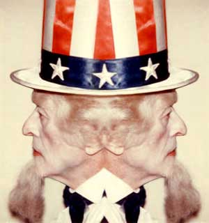

|

Hypocrisy: The US Government's Biggest Problem
A very simple and easy-to-understand explanation for why the world hates us.
- - - - - - - - - -
by Charley Reese
 HE BIGGEST SINGLE PROBLEM the federal government has is its hypocrisy. It talks one way and acts another. It talks of spreading democracy while supporting dictators; it blathers about human rights while violating them; and it claims to promote the rule of law while scoffing at laws it considers inconvenient. HE BIGGEST SINGLE PROBLEM the federal government has is its hypocrisy. It talks one way and acts another. It talks of spreading democracy while supporting dictators; it blathers about human rights while violating them; and it claims to promote the rule of law while scoffing at laws it considers inconvenient.
If the basis of our foreign policy is going to be American security and American economic gains, then we ought to say so and shut up about spreading democracy and promoting human rights. Instead, we steadily destroy our credibility in the world by talking one way and acting another.
We more or less invented war crimes by staging the show trials at Nuremberg, Germany, at the end of World War II. We happily hanged German and Japanese officials. Now, however, the world wants to establish a permanent international tribunal to try people for war crimes. Our reply is, "No way." Not only are we not supporting the international tribunal, but we are exacting agreements from individual countries to never offer up Americans to their jurisdiction. War crimes, applied to us, are "just politics."
This example is really funny. Who are our closest allies in the Islamic world? Egypt, Jordan, Saudi Arabia and Pakistan. There's not a democracy in the bunch. The insanity of the neoconservative scheme to impose democracy on the Middle East is obvious. If today there were truly free elections in every Middle Eastern country, every one of them would elect an anti-American government.
This is because of our greatest hypocrisy in the foreign field. We made the Iraqi people pay a horrific price in the name of enforcing United Nations resolutions. We killed tens of thousands of Iraqis with bombs and sanctions and destroyed their economy. In the boastful words of one of our generals, we bombed Iraq "back into the preindustrial age."
But when the United Nations refused to pass a resolution authorizing us to launch a new war against Iraq, we told the United Nations to go stick it in its ear. And more to the point, from the point of view in the Arab world, Israel is in violation of more than 60 U.N. resolutions, and that's counting only the ones we didn't veto. We have prevented the United Nations from imposing even the mildest sanctions on Israel to force it to comply with international law.
It was not OK for Iraq to occupy Kuwait, but it is OK, from our point of view, for Israel to occupy parts of Syria, East Jerusalem, the West Bank and the Gaza Strip. It was, for a long time, even OK for Israel to occupy a huge section of Egypt and a slice of Lebanon.
In the current war, we have not only abused Iraqi prisoners, but we handed over some suspected terrorists to countries we know will torture the dickens out of them. It is irrelevant to say that Saddam Hussein would have abused them worse than we did. Saddam never proclaimed himself a democrat and human-rights advocate. We do. No criminal defense lawyer would ever ask for mercy on the basis that his client only beat and raped the victim, but spared her life.
To put it plainly, our federal government does not live up to American ideals. Americans citizens, rather than acting like sheep, should vigorously insist that it do so. We must replace an unjust policy with a just policy and substitute sincerity for hypocrisy and propaganda.
That is the only way to make America secure. That is the only way to win the war against terrorists. Terrorists have never attacked us out of the blue for no rational reason. To paraphrase an old Bill Clinton slogan, "It's the foreign policy, stupid."
Reprinted from Antiwar.com

|